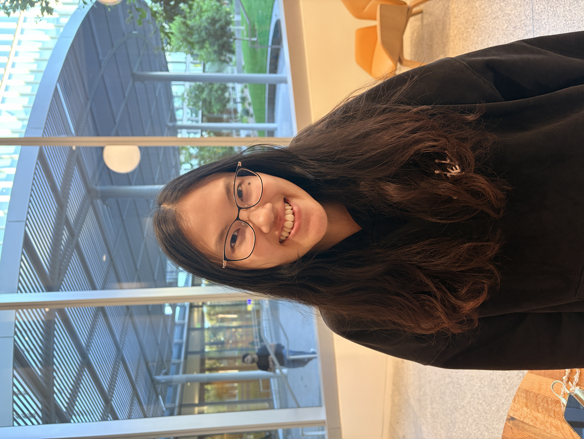
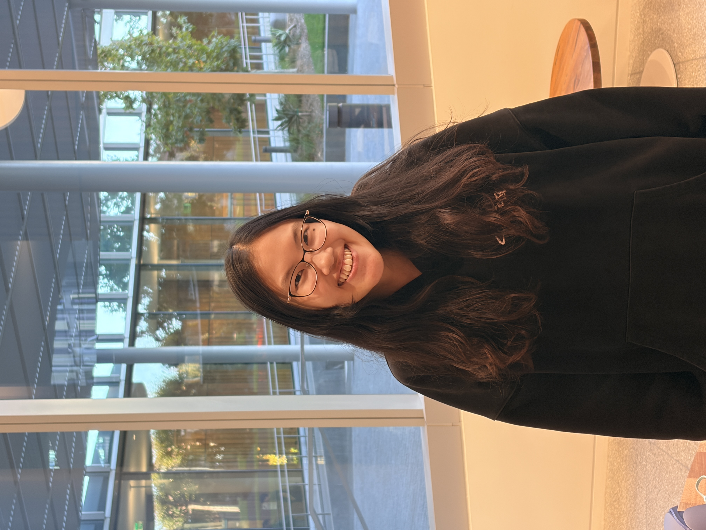
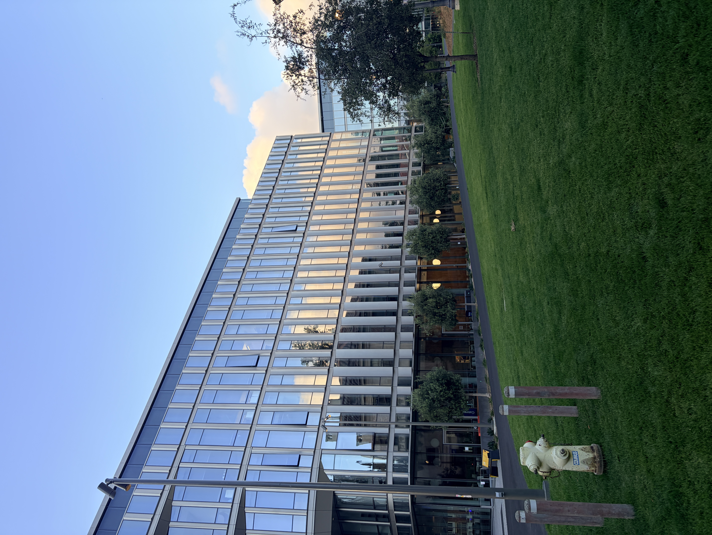
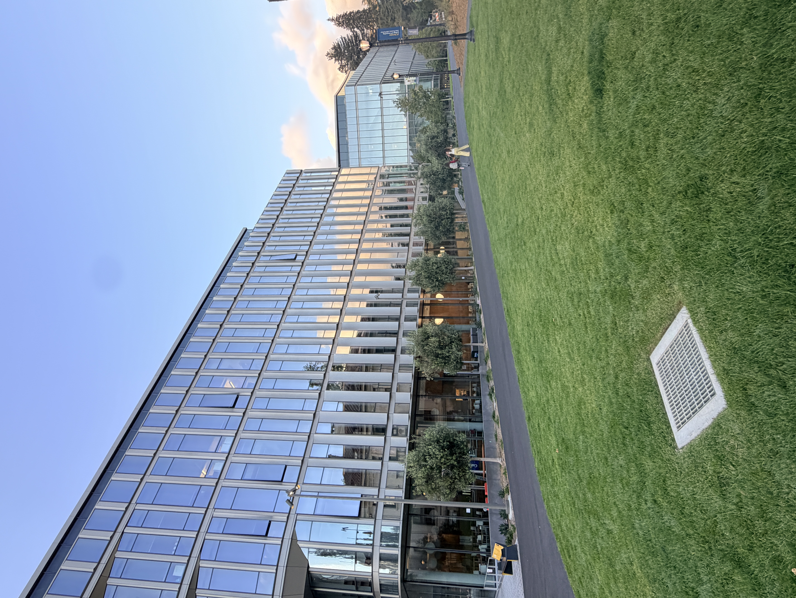
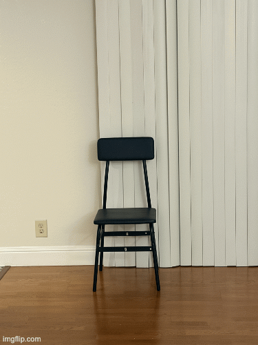

Portrait &
perspective
A close-up portrait exaggerates the distance between facial features. Stepping back and zooming in produces a gentler, more natural perspective.


What changedStepping back flattens the depth perspective and reduces facial feature distortion, creating a more flattering portrait.
Compressed
space
The same principle reshapes architecture. Changing the camera’s position alters the apparent relationship between foreground and background.


What changedFrom farther away, zoom makes background elements appear larger and closer to the foreground, compressing the scene into a flatter plane.
The dolly
zoom
Inspired by Hitchcock’s Vertigo, I moved the camera backward while zooming in, keeping the subject fixed as the world stretches around them.
